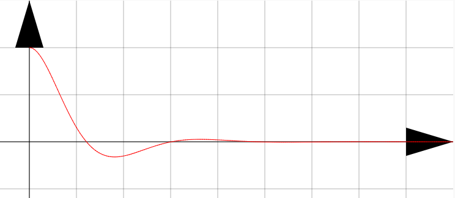
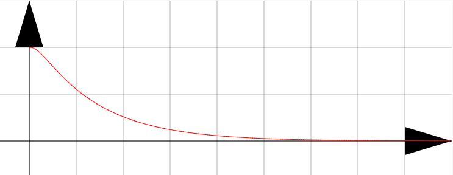

運動方程式に復元力$F=-k{x}$（${x}=0$に向けて戻そうとする力${x}>0$なら負の向きの力、${x}<0$なら正の向きの力が加わる。つまりどっちにしても、${x}=0$に向かうような力である。よってこれを「復元力」と呼ぶ。）を加えた、 \begin{equation} m\left({\mathrm d\over\mathrm dt}\right)^2 {x}= -K{\mathrm d\over\mathrm dt}{x}-k{x}\label{Fkvkx} \end{equation} を解いてみよう（重力は考えないことにする）。
この運動方程式があらわす現象は「空気抵抗を受けながら運動するバネ振り子」である。
下のプログラムを動かして運動の様子を見よう。
初期位置:y0=0
初速度:vy0=4
バネ定数:k=4
空気抵抗:K=1
バネ定数$k=4$、空気抵抗の係数$K=6$で初速度0、初期位置2で運動させると、

のような運動が起こる。これは確かに「振動しながらどんどん遅くなる」（ちなみに「減衰振動」と呼ぶ）。
バネ定数$k=4$、空気抵抗の係数$K=2$で初速度0、初期位置2で運動させると、

のように、全く「振動」ではない、ただ「原点に止まる」という運動になる（これは「過減衰」と呼ぶ）。
「どのあたりに二つの境目があるか？」とやってみるのも面白い。
この違いがどのように出るのか？
もちろん、空気抵抗が大きくなれば振動できなくなるというのは気持ちとしてはわかるだろうが、そこを微分方程式から納得したい。また、実はこの方程式の解は２種類ではなく３種類にわかることが、実際に方程式を解いてみるとわかる。
では、方程式を解きながら考えてみよう。
運動方程式 \begin{equation} m\left({\mathrm d\over\mathrm dt}\right)^2 {x}= -K{\mathrm d\over\mathrm dt}{x}-k{x} \end{equation} から、例によって特性方程式を作ると、$m\lambda^2 +K\lambda +k=0$となる。これの解は（二次方程式の解の公式を用いて） \begin{equation} \lambda_\pm={-K\pm\sqrt{K^2-4mk}\over 2m}=-{K\over 2m}\mp{{\sqrt{K^2-4mk}}\over 2m} \end{equation} となる。ここから、$K^2-4mk$が負の場合、0の場合、正の場合の三つに分けて考える。
このように「場合分け」をしなければいけないというのが、運動に種類がある（予想では２種類だったが実は３種類だった）理由である。
$K^2-4mk<0$の場合この場合は$\lambda$は複素数になる。$\omega={\sqrt{4mk-K^2}\over 2m}$という定数（$\omega$は実数である）を定義し、 $\lambda_\pm=-{K\over 2m}\mp\mathrm i\omega$と書くことにする。
こうして解を \begin{equation} {x}= C_+ \mathrm e^{-{K\over 2m}{t}+\mathrm i\omega{t}} +C_- \mathrm e^{-{K\over 2m}{t}-\mathrm i\omega{t}}\label{gensuisindou} \end{equation} と表すことができる。一見複素数であるが例によって係数を操作して、$C_+=C,C_-=C^*$とすることで \begin{equation} {x}= \mathrm e^{-{K\over 2m}{t}}\left( C\mathrm e^{\mathrm i\omega{t}} +C^* \mathrm e^{-\mathrm i\omega{t}}\right) \end{equation} が実数解となる。
つまり、この式をちゃんと計算すると、実は虚数$\mathrm i$はどこにもいないのだ！
そのことを確認するために、$C=A+\mathrm iB,C^*=A-\mathrm iB$などと置いて計算をしてみる。
オイラーの公式$\mathrm e^{\mathrm i\theta}=\cos\theta+\mathrm i\sin\theta$などを使って、結果を三角関数で表現すると以下のようになる（$A,B,D,\alpha$は実数の定数）。 \begin{equation} {x}=2 \mathrm e^{-{K\over 2m}{t}}\left( A\cos \omega{t} +B\sin\omega{t}\right) = D\mathrm e^{-{K\over 2m}{t}} \cos \left( \omega{t}+\alpha\right)\label{gensui} \end{equation}
下の動くグラフに$K^2-4mk<0$になる値（ちなみに$m=1$で固定であるから、$K^2<4k$ということ）を代入してみよう。二つの解（青と赤）がプロットされる。線形結合を取ることでいろんな解が出ることもわかる。
$K^2-4mk=0$の場合この場合、$\lambda_+=\lambda_-$となる。よって添字は取って、$\lambda=-{K\over 2m}$と書こう。重解が出る場合であるから、解は以下の通り。 \begin{equation} {x}=\left(C_1{t}+C_0\right)\mathrm e^{\lambda{t}}\label{rinkai} \end{equation} この解「臨界振動」は、$K^2-4mk<0$と$K^2-4mk>0$のちょうど境目にあたる。
下の動くグラフに$K^2-4mk=0$になる値（$K^2=4k$ということ）を代入してみよう。
$K^2-4mk>0$の場合この場合は単純に、 \begin{equation} {x}= C_+ \mathrm e^{\lambda_+{t}} +C_- \mathrm e^{\lambda_-{t}}\label{kagensui} \end{equation} が解である。$\lambda_\pm$はどちらも負の数になるから、この二つの解のどちらも「指数関数的に減衰する解」である。
これも下のグラフにいろんな数値を入れてみよう。
A=1
B=1
K=1
k=1